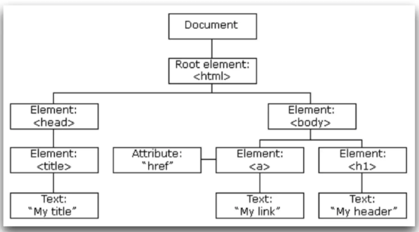

A web: Protocolos
- Protocolo é uma forma de comunicação entre computadores através da rede
- O HTTP serve para nós solicitarmos arquivos, imagens e etc (entramos em sites graças ao protocolo http)
- SMTP protocolo para enviar e-mail
- TCP protocolo de transferência
A web: URL
- Cada arquivo que carrega no navegador é nomeado por uma URL
- A URL (Uniform Resource Locator) pode ser dividida em três partes: protocolo, servidor e arquivo
- https://www.joiasvip.com.br/index.html
- http = protocolo;
- www.joiasvip.com.br = servidor (DNS para um IP)
- index.html = arquivo
O DOM
- Podemos mudar completamento uma página HTML atravês do DOM
- É possível alterar elementos, atributos, CSS
- Além de alterar podemos adicionar e também remover
- Além de ser possível criar eventos na página, como animações

Movendo-se através do DOM
- Podemos acessar todos os elementos a partir de document.body
- A partir deles vamos entrando nos childNodes (nó)
- E depois acessando as propriedades que nos interessam
Encontrando elementos: por Tag
- Utilizamos o seguinte método
- document.getElementByTagName("h2")
Encontrando elementos por id
- Utilizamos o seguinte método
- document.getElementById("algum-id")
Encontrando elementos por id
- Utilizamos o seguinte método
- document.getElementByClassName("alguma-class")
Encontrando elementos por: query
- Um método que se assemelha a grande funcionalidade do Jquery
- Nos permitindo encontrar os elementos pelo seus seletores de CSS
- document.querySelector(".alguma-class")
- document.querySelector("#alguma-id")
Alterando HTML
- Com o DOM Podemos adicionar, remover e clonar elementos
- Podemos utilizar métodos como: insertBefore, appendChild e replaceChild
Alterando HTML: insertBefore
- Insere um nó antes do nó de referência do método
- Precisamos de um elemento para ser adicionado
- O elemento que terá o outro elemento adicioando antes dele
- E o elemento pai destes dois
Alterando o DOM com replaceChild
- Repõe um antigo elemento no DOM, com um novo